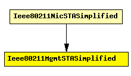

File: NetworkInterfaces/Ieee80211/Mgmt/Ieee80211MgmtSTASimplified.ned
C++ definition: click here
Used in 802.11 infrastructure mode: handles management frames for a station (STA). Relies on the MAC layer (Ieee80211Mac) for reception and transmission of frames.
This variant is a very simplistic: the AP address and channel is preconfigured, there is no scanning, authentication or association. Only data frames are understood or sent at any time.
This module never switches channels, that is, it will operate on the channel the physical layer is configured for (see channelNumber in Ieee80211Radio).
Author: Andras Varga
The following diagram shows usage relationships between modules, networks and channels. Unresolved module (and channel) types are missing from the diagram. Click here to see the full picture.
If a module type shows up more than once, that means it has been defined in more than one NED file.
| Ieee80211NicSTASimplified | This NIC implements an infrastructure mode 802.11 network interface card for a host (STA), but using a simplified mgmt module that does not support handovers. |
| Name | Type | Description |
|---|---|---|
| accessPointAddress | string | MAC address of associate AP |
| frameCapacity | numeric |
| Name | Direction | Description |
|---|---|---|
| uppergateIn | input | |
| uppergateOut | output | |
| macIn | input | |
| macOut | output |
simple Ieee80211MgmtSTASimplified parameters: accessPointAddress: string, // MAC address of associate AP frameCapacity: numeric; gates: in: uppergateIn; out: uppergateOut; in: macIn; out: macOut; endsimple